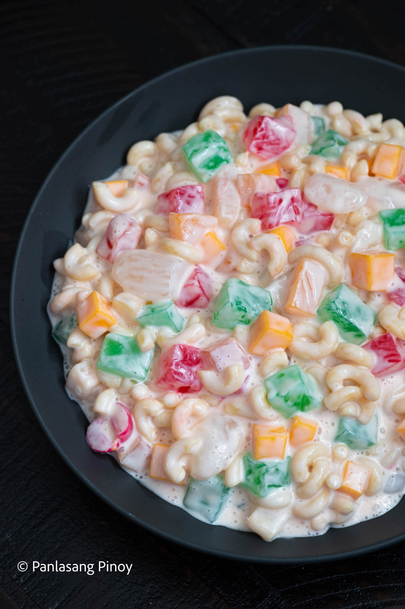

Macaroni Salad

A Filipino dessert that is common during the holidays especially Christmas. A sweet and chilled
dessert that is sure to comfort your family.
Ingredients
- 500 g elbow macaroni
- 470 ml Lady's Choice real mayonnaise
- 300 ml condensed milk
- 250 ml all-purpose cream
- 250 g sharp diced cheddar cheese
- 250 g drained red nata de coco
- 250 g drained green nata de coco
- 350 g drained kaong (sugar palm)
- 850 g drained fruit cocktail
Directions
- Cook macaroni based on package instructions. Set aside.
- Combine all-purpose cream, condensed milk, and Lady’s Choice Mayonnaise in a large mixing bowl. Mix well.
- Add kaong, nata de coco, fruit cocktail, and cheese. Mix well.
- Put the cooked macaroni into the bowl with the other ingredients. Toss until well blended.
- Cover the bowl and refrigerate for at least 1 hour.
- Serve chilled. Share and enjoy!
Go back